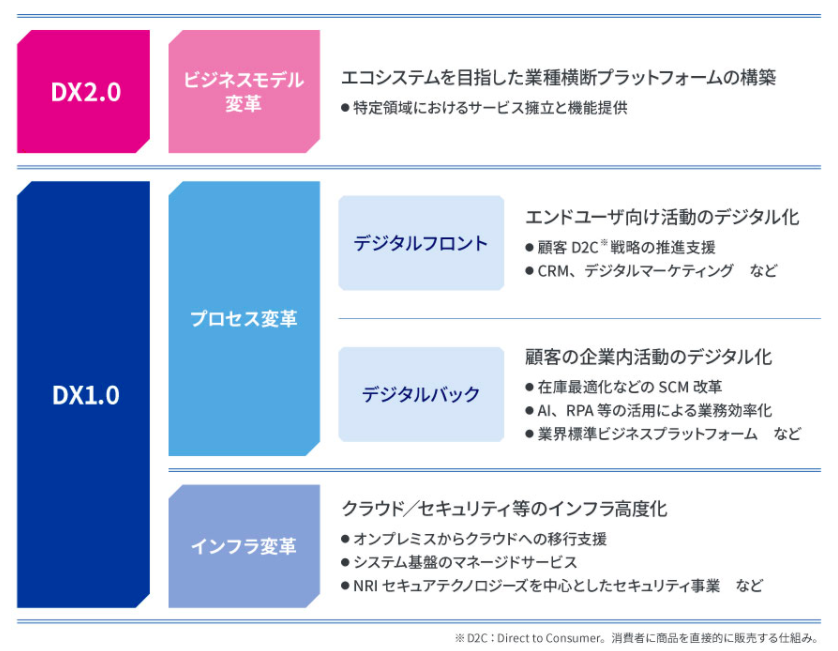

NRIのデジタルビジネス戦略
NRI では、企業の DX に向けた取り組みについて、既存ビジネスの業務プロセス変革に寄与する DX を「DX1.0」、デジタルで新しいビジネスモデルそのものを生み出す DX を「DX2.0」と定義しています。
DXを実現するためには、業務プロセス変革やビジネスモデル創造、そして、それらを実現する IT を同時並行で、共に議論しながら、かつ、スピーディーに実装できる戦略パートナーが必要です。NRI は、コンサルティングと IT ソリューションの人材と機能を併せ持ち、お客さまと併走し、お客さまと仮説検証を繰り返しながらビジネスを創出する「コンソリューション」の提供を強みとして、DX の実現を推進します。

デジタルが拓く近未来(NRIのDX)(4.06 MB)